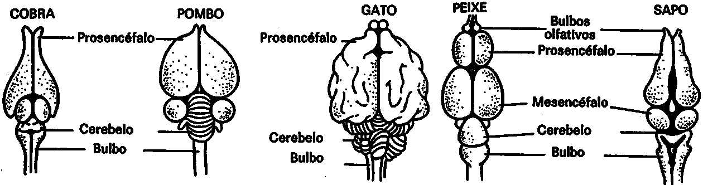
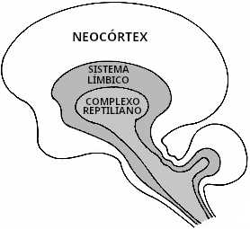
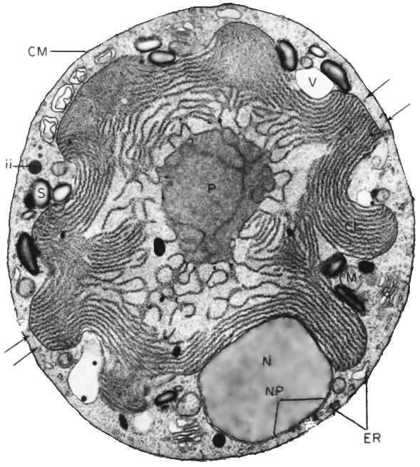
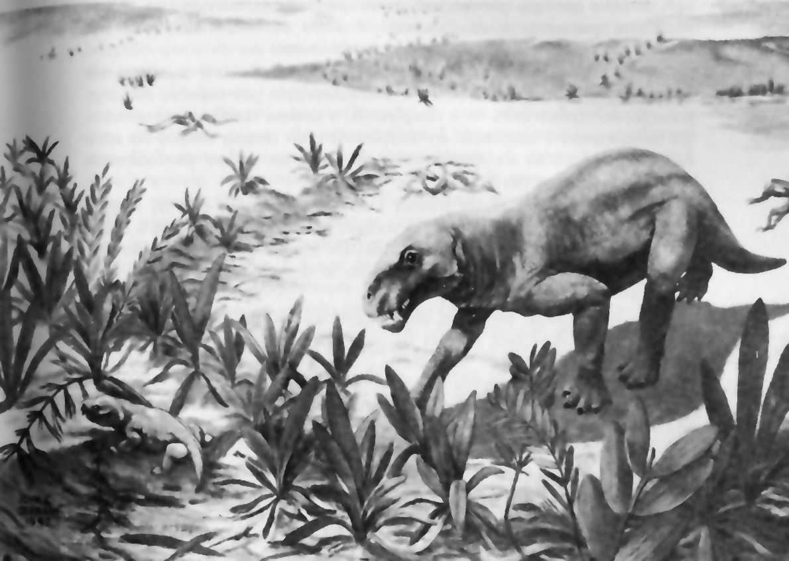
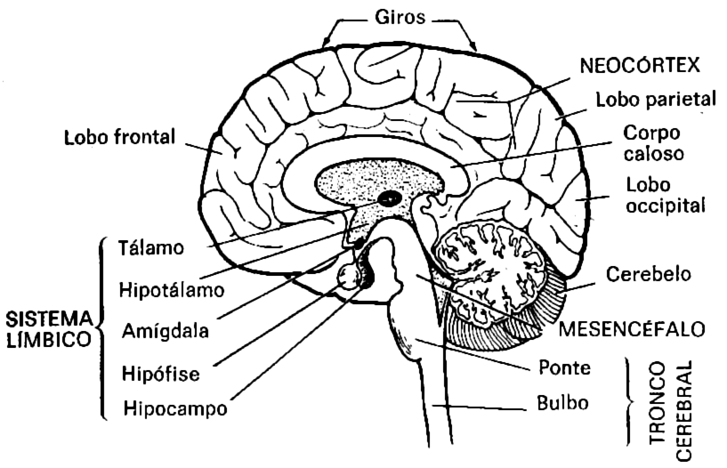
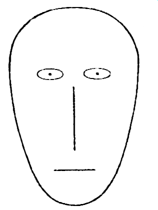
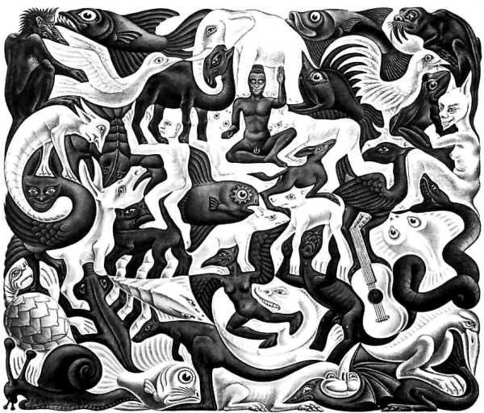

III O cérebro e a carroça
O cérebro do peixe não é grande coisa. O peixe possui uma notocorda ou medula espinhal, a qual compartilha com invertebrados ainda inferiores. O peixe primitivo tem também uma pequena saliência na extremidade frontal da medula espinhal, que é seu cérebro. Nos peixes superiores, a saliência é um pouco mais desenvolvida, mas, mesmo assim, não pesa mais que 1 ou 2 gramas. Essa saliência corresponde, nos animais superiores, ao rombencéfalo* ou tronco cerebral e ao mesencéfalo*. O cérebro dos peixes modernos é constituído principalmente pelo mesencéfalo*, com um diminuto prosencéfalo*; nos anfíbios e répteis atuais, ocorre exatamente o oposto (ver figura). E mesmo assim os moldes internos dos fósseis vertebrados mais primitivos que se conhecem revelam que as principais divisões do cérebro moderno (rombencéfalo*, mesencéfalo* e prosencéfalo*, por exemplo) já estavam estabelecidas. Há 500 milhões de anos, nadando nos mares primitivos, viviam criaturas semelhantes a peixes, chamadas ostracodermos e placodermos, cujos cérebros tinham reconhecidamente as mesmas divisões gerais dos nossos. O tamanho relativo e a importância desses componentes, contudo, e mesmo suas funções primitivas, eram certamente muito diferentes dos de hoje. Um dos aspectos mais fascinantes da evolução subsequente do cérebro é a história dos acréscimos sucessivos e da especialização de três camadas adicionais que envolvem a medula espinhal, o rombencéfalo* e o mesencéfalo*. Após cada etapa evolutiva, as porções mais antigas do cérebro subsistem e precisam ainda ser acomodadas. Mas uma nova camada, com novas funções, foi acrescida.

[Imagem: Diagramas esquemáticos comparando os cérebros de um peixe, de um anfíbio, de um réptil, de uma ave e de um mamífero (Cobra, Pombo, Gato, Peixe, Sapo). O cerebelo* e o bulbo* fazem parte do rombencéfalo*.]
O principal expoente contemporâneo do estudo desse aspecto é Paul MacLean, diretor do Laboratório de Evolução e Comportamento Cerebral do Instituto Nacional de Saúde Mental. Uma característica fundamental do trabalho de MacLean é que ele encerra muitos animais diferentes, abrangendo desde lagartos até macacos-de-cheiro. Outra é que ele e seus colaboradores estudaram cuidadosamente o comportamento social e outros tipos de comportamento desses animais, a fim de aperfeiçoar suas perspectivas de descobrir que parte do cérebro controla que tipo de comportamento.
Os macacos-de-cheiro que possuem certas marcas faciais apresentam uma espécie de ritual ou exibição que executam quando se cumprimentam. Os machos mostram os dentes, sacodem as barras da jaula, emitem um guincho agudo, que é possivelmente aterrorizador para os outros macacos-de-cheiro, e erguem suas pernas para exibir o pênis ereto. Conquanto tal comportamento chegue às raias da descortesia em muitas sociedades humanas contemporâneas, é um ato consideravelmente elaborado e serve para manter as hierarquias de domínio nas comunidades de macacos-de-cheiro.
MacLean descobriu que a lesão de uma pequena parte do cérebro do macaco-de-cheiro evitará essa exibição, deixando íntegra uma grande variedade de outros comportamentos, inclusive o comportamento sexual e combativo. A parte comprometida pertence à porção mais arcaica do prosencéfalo*, parte esta que os seres humanos, assim como outros primatas*, compartilham com nossos ancestrais mamíferos e répteis. Nos mamíferos não-primatas e nos répteis, o comportamento ritual equivalente parece ser controlado na mesma parte do cérebro, e lesões nesse componente reptiliano podem prejudicar outros tipos de comportamento além do ritual — por exemplo, caminhar ou correr.
A ligação entre exibição sexual e posição na hierarquia de domínio pode ser frequentemente observada entre os primatas*. Entre os macacos-japoneses, a classe social é mantida e reforçada por um ritual diário: os machos das castas inferiores adotam a posição sexual submissa característica da fêmea no cio e são, de forma rápida e cerimonial, montados por machos de castas superiores. Essas encenações são ao mesmo tempo comuns e superficiais. Parecem ter pouco conteúdo sexual, mas servem como símbolos de fácil entendimento de quem é quem em uma sociedade complexa.
Em um estudo do comportamento do macaco-de-cheiro, Caspar, o animal dominador na colônia e definitivamente o exibidor mais ativo, nunca foi visto copulando, embora fosse responsável por dois terços da exibição genital na colônia — a maior parte desta dirigida a outros macacos adultos. O fato de Caspar ser altamente motivado a estabelecer domínio, mas pouco motivado a praticar o sexo, sugere que, embora essas duas funções utilizem sistemas orgânicos idênticos, são bastante separadas. Estudando essa colônia, os cientistas concluíram: "A exibição genital é, por conseguinte, considerada o sinal social mais efetivo com respeito à hierarquia do grupo. Tem caráter ritual e parece adquirir o significado: 'Eu sou o chefe'. Origina-se mais provavelmente na atividade sexual, mas é utilizada para a comunicação social e independe da atividade reprodutora. Em outras palavras, a exibição genital é um ritual derivado do comportamento sexual, mas que serve a propósitos sociais e não reprodutores".
Numa entrevista à televisão em 1976, o animador do programa perguntou a um jogador de futebol profissional se era embaraçoso para os jogadores ficarem despidos juntos no vestiário. Sua resposta imediata: "Nós nos orgulhamos! Embaraço nenhum. É como se estivéssemos dizendo um ao outro: 'Vamos ver o que é que você tem, homem!'".
As conexões neuranatômicas, assim como as comportamentais, entre sexo, agressão e domínio são inferidas em uma série de estudos. Os rituais de acasalamento dos grande felinos e de muitos outros animais são praticamente indistinguíveis da luta, nas fases iniciais. É comum os gatos domésticos ficarem ronronando (às vezes alto) perversamente, com as garras arranhando o tapete ou a pele humana. O uso do sexo para estabelecer e manter o domínio é por vezes evidente nas práticas humanas heterossexuais e homossexuais (embora não seja, naturalmente, o único elemento em tais práticas), assim como na expressão verbal "obscena". Considere-se o fato peculiar da agressão verbal de duas palavras mais comuns em inglês ("fuck you") e que em outras línguas refere-se a um ato de prazer físico transbordante; a forma inglesa provavelmente deriva do verbo alemão fokken, que significa "golpear". Esse estranho uso pode ser compreendido como um equivalente verbal da linguagem simbólica dos macacos, com a palavra inicial "eu" não expressa, mas compreendida por ambos os parceiros. Essa e muitas expressões semelhantes parecem ser cópulas humanas cerimoniosas. Como veremos mais adiante, tal comportamento provavelmente remonta a épocas muito anteriores aos macacos, há centenas de milhões de anos na escala geológica.
A partir de experiências como as realizadas com macacos-de-cheiro, MacLean concebeu um modelo cativante da estrutura e da evolução cerebral que ele denomina o cérebro trino*. "Somos obrigados", diz ele, "a nos olhar e a olhar o mundo através dos olhos de três mentalidades bastante diferentes, duas das quais carecem do poder da fala." O cérebro humano, sustenta MacLean, "compreende três computadores biológicos interligados", cada um com "sua própria inteligência especial, sua própria subjetividade, seu próprio sentido de tempo e espaço, sua própria memória, suas funções motoras e outras". Cada cérebro corresponde a uma etapa evolutiva diferenciada e fundamental. Os três cérebros são sabidamente distintos, em termos neuranatômicos e funcionais, e contêm distribuições acentuadamente diferentes dos neuroquímicos dopamina e colinesterase.
Na parte mais arcaica do cérebro situam-se a medula espinhal, o bulbo* e a ponte*, que fazem parte do rombencéfalo*, e o mesencéfalo*. MacLean chama essa combinação de medula espinhal, rombencéfalo* e mesencéfalo* de chassi neural*. Ela contém o mecanismo neural básico para a reprodução e a auto-preservação, abrangendo a regulação cardíaca, a circulação sanguínea e a respiração. No peixe ou no anfíbio, é quase todo o cérebro existente. Mas um réptil ou um animal superior destituído de seu prosencéfalo* é, de acordo com MacLean, "tão imóvel e sem objetivo como um veículo sem motorista". Realmente, a epilepsia do tipo grande mal pode, acredito, ser descrita como uma doença na qual todos os condutores cognitivos estão fora de ação, em virtude de uma espécie de tempestade elétrica no cérebro, e a vítima fica momentaneamente sem qualquer comando, a não ser o exercido por seu chassi neural*. Esse é um profundo distúrbio, que faz regredir temporariamente a vítima a várias centenas de milhões de anos. Os antigos gregos, de quem conservamos o nome dado à doença, reconheceram sua natureza profunda e a consideravam infligida pelos deuses.
MacLean distinguiu três espécies de regentes do chassi neural*. O mais arcaico deles circunda o mesencéfalo* (e é constituído, em sua maior parte, pelo que os neuranatomistas chamam de estria olfativa, corpo estriado e globo pálido). Compartilhamos isso com os outros mamíferos e répteis. Provavelmente seu desenvolvimento se processou há várias centenas de milhões de anos. MacLean o denominou complexo reptiliano* ou complexo-R*. Circundando o complexo-R* encontra-se o sistema límbico*, assim chamado porque se limita com o cérebro subjacente. (Em inglês, os membros são chamados de limbs porque têm situação periférica em relação ao resto do corpo.) Temos o sistema límbico* em comum com outros mamíferos, mas o mesmo não ocorre, em sua elaboração total, com os répteis. Provavelmente ele se desenvolveu há mais de 150 milhões de anos. Finalmente, envolvendo o restante do cérebro, e evidentemente a aquisição evolutiva mais recente, temos o neocórtex*. À semelhança dos mamíferos superiores e de outros primatas*, os seres humanos possuem um neocórtex* relativamente maciço. Ele se torna progressivamente mais desenvolvido nos mamíferos mais evoluídos. O neocórtex* mais elaborado é o nosso (e o dos golfinhos e baleias). Provavelmente surgiu há várias dezenas de milhões de anos, mas seu desenvolvimento foi grandemente acelerado há alguns milhões de anos, quando o homem apareceu. Uma representação esquemática do cérebro humano é apresentada na figura abaixo, e também uma comparação do sistema límbico* com o neocórtex* em três mamíferos contemporâneos. O conceito do cérebro trino* — concebido independentemente de estudos das proporções entre massa cerebral e massa corporal do capítulo anterior — está em inteira concordância com as conclusões de que a emergência de mamíferos e primatas* (principalmente os seres humanos) se fez acompanhar de grandes surtos de evolução cerebral.
É muito difícil evoluir alterando a profunda trama da vida: qualquer mudança que haja é provavelmente letal. Transformações fundamentais podem, no entanto, ser realizadas pelo acréscimo de novos sistemas sobre as estruturas antigas. Esta é a retrospectiva de uma doutrina que foi chamada recapitulação* por Ernst Haeckel, um anatomista alemão do século XIX, e que atravessou vários ciclos de aceitação e rejeição por parte dos eruditos. Haeckel sustentava que, em seu desenvolvimento embriológico, qualquer animal tende a repetir ou recapitular a sequência que seus ancestrais seguiram durante a evolução. E, realmente, no desenvolvimento humano intra-uterino, percorremos etapas muito semelhantes aos peixes, répteis e mamíferos não primatas* antes de nos tornarmos seres reconhecidamente humanos. Na fase de peixe, existem até fendas branquiais que são inteiramente inúteis para o embrião, uma vez que ele é nutrido através do cordão umbilical, mas que constituem uma necessidade para a embriologia humana: considerando-se que as brânquias eram vitais para nossos ancestrais, passamos por uma fase branquial até atingirmos a forma humana. O cérebro do feto também se desenvolve de dentro para fora, e, em linhas gerais, percorre a sequência: chassi neural*, complexo-R*, sistema límbico* e neocórtex* (veja a figura da página 122 sobre a embriologia do cérebro humano).

[Imagem:Representaçāo altamente esquemática do complexo reptiliano*, do sistema límbico* e do neocórtex* no cérebro, segundo MaCLean.]

[Imagem: Aspectos esquemáticos, vistos de cima e de lado, de cérebros de coelho, gato e macaco. A região escura corresponde ao sistema límbico*, vista mais facilmente nos aspectos laterais. As regiões brancas sulcadas representam o neocórtex*, mais facilmente visível nos aspectos de topo.]
A razão da recapitulação* pode ser compreendida da seguinte forma: a seleção natural* age somente sobre os indivíduos, não sobre a espécie, e pouco sobre óvulos ou fetos. Portanto, a transformação evolutiva mais tardia se dá após o nascimento. O feto pode apresentar características (tais como fendas branquiais em mamíferos) que são inteiramente incapazes de se adaptar após o nascimento, mas, contanto que não causem problemas sérios para o feto e sejam perdidas antes do nascimento, podem ser conservadas. Nossas fendas branquiais representam vestígios não de peixes antigos, mas de antigos embriões de peixes. Muitos sistemas orgânicos se desenvolvem não pelo acréscimo e pela preservação, mas pela modificação de sistemas mais primitivos, como é o caso da modificação de barbatanas para pernas e de pernas para nadadeiras ou asas; de pés para mãos ou de glândulas sebáceas para glândulas mamárias; ou de arcos branquiais para ossículos do ouvido; ou de escamas para dentes de tubarão. Por conseguinte, a evolução por acréscimo e a preservação funcional da estrutura preexistente devem ocorrer por uma das duas razões seguintes — ou a função antiga é imprescindível, assim como a nova, ou não há meio de evitar o antigo sistema, que é compatível com a sobrevivência.
Na natureza, existem muitos outros exemplos dessa espécie de desenvolvimento evolutivo. Tomando-se um caso aleatório, consideremos o motivo pelo qual as plantas são verdes. A fotossíntese das plantas verdes utiliza a luz nas faixas vermelha e violeta do espectro solar para degradar a água, elaborar carboidratos e realizar outras funções peculiares às plantas. Ocorre que o Sol emite mais luz nas faixas amarela e verde do espectro do que na vermelha ou na violeta. As plantas possuidoras de clorofila como seu único pigmento fotossintético rejeitam a luz no ponto onde ela é mais abundante. Muitas plantas parecem ter "percebido" isso tardiamente e fizeram adaptações adequadas. Criaram-se outros pigmentos, que refletem a luz vermelha e absorvem a luz amarela e verde, tais como os carotenoides e ficobilinas. Muito bem. Mas será que as plantas possuidoras de novos pigmentos fotossintéticos abandonaram a clorofila? A resposta é não. A figura abaixo lado mostra a fábrica fotossintética de uma alga vermelha. As estrias contêm a clorofila e as pequenas esferas aninhadas entre essas estrias contêm as ficobilinas, que dão à alga vermelha sua cor característica. Por uma questão de conservação, essas plantas transferem a energia que adquirem da luz solar verde e amarela para a clorofila, que, muito embora não tenha absorvido a luz, é ainda necessária como mediadora entre a luz e a química em toda fotossíntese vegetal. A natureza não podia eliminar a clorofila e substituí-la por pigmentos melhores; a clorofila está profundamente tecida na trama da vida. As plantas possuidoras de pigmentos acessórios são certamente diferentes. São mais eficientes. Mas lá, ainda que trabalhando com menor responsabilidade, no âmago do processo fotossintético, está a clorofila. Acredito que a evolução do cérebro tenha ocorrido de forma análoga. As partes profundas e arcaicas ainda funcionam.

[Imagem: Fotografia de uma pequena alga vermelha (Porphyridium cruentum) obtida com microscópio eletrônico. O cloroplasto, a fábrica fotossintética deste organismo, preenche quase totalmente a célula. A fotografia, ampliada numa razão de 1/23000, foi tirada pela Dra. Elizabetb Gantt, do Laboratório de Biologia Radiológica do Instituto Smithsoniano.]
1. O complexo-R*
Se o ponto de vista precedente é correto, devemos esperar que o complexo-R* no cérebro humano ainda esteja de alguma forma realizando as funções dos dinossauros, e que o córtex límbico tenha os pensamentos dos pumas e das preguiças. Não resta dúvida de que cada nova etapa na evolução do cérebro acompanha-se de alterações na fisiologia dos componentes preexistentes. A evolução do complexo-R* deve ter testemunhado transformações no mesencéfalo*, e assim por diante. E mais, sabemos que o comando de muitas funções é compartilhado por diferentes componentes do cérebro. Mas ao mesmo tempo seria assombroso se os componentes abaixo do neocórtex* não estivessem até certo ponto funcionando como o faziam em nossos ancestrais remotos.
MacLean demonstrou que o complexo-R* desempenha importante papel no comportamento agressivo, na demarcação territorial, no ritual e no estabelecimento da hierarquia social. Afora eventuais e honrosas exceções, parece-me que isso caracteriza sobremaneira o comportamento humano moderno do ponto de vista burocrático e político. Não quero dizer que o neocórtex* não esteja de forma alguma atuando em uma convenção política americana ou em uma reunião do Soviete Supremo; afinal de contas, grande parte da comunicação em tais rituais é verbal e, por conseguinte, neocortical. Mas é surpreendente quanto de nosso comportamento real — a julgar pelo que dizemos e pensamos a seu respeito — pode ser descrito em termos reptilianos. Falamos comumente de assassinato a "sangue-frio". O conselho dado por Maquiavel em O príncipe era "deliberadamente assumir a fera".
Numa interessante antevisão parcial dessas ideias, escreveu a filósofa americana Susane Langer: "A vida humana é continuamente entremeada de rituais, bem como de práticas animalescas. É uma intrincada trama de razão e rito, de sabedoria e religião, prosa e poesia, realidade e sonho... O ritual, como a arte, é essencialmente o término ativo de uma transformação simbólica de experiência. Origina-se no córtex, não no 'cérebro arcaico'; mas ele se origina de uma necessidade elementar daquele órgão, uma vez que o órgão se desenvolveu até a condição humana". À exceção do fato de que o complexo-R* situa-se no "cérebro arcaico", ela parece acertar na mosca.
Pretendo ser muito claro quanto às implicações sociais da afirmação de que os cérebros reptilianos influenciam as ações humanas. Se o comportamento burocrático é controlado em seu âmago pelo complexo-R*, significaria isso que não há esperança para o futuro do homem? No ser humano, o neocórtex* representa cerca de 85 por cento do cérebro, o que é certamente um índice de sua importância em relação ao tronco cerebral*, complexo-R* e sistema límbico*. A neuranatomia, a história política e a introspecção em conjunto oferecem indícios de que os seres humanos são bastante capazes de resistir ao ímpeto de se renderem a todos os impulsos do cérebro reptiliano. Não há a menor possibilidade, por exemplo, de que a Declaração dos Direitos Humanos tenha sido registrada, ou muito menos concebida, pelo complexo-R*. É precisamente nossa plasticidade*, nossa longa infância, que evita, nos seres humanos, a obediência escravizada ao comportamento geneticamente pré-programado, mais do que em qualquer outra espécie. Mas, se o cérebro trino* é um modelo fidedigno de como os seres humanos funcionam, não convém ignorar o componente reptiliano da natureza humana, sobretudo nosso comportamento ritual e hierárquico. Pelo contrário, o modelo nos ajuda a compreender mais ou menos o que são os seres humanos. (Coloco-me a questão de, por exemplo, se os aspectos rituais de muitas doenças psicóticas — como a esquizofrenia hebefrênica — poderiam ser o resultado da hiperatividade de algum centro do complexo-R*, ou do defeito de algum ponto do neocórtex* cuja função seja a de reprimir o complexo-R*. Também me pergunto se o frequente comportamento ritualístico das crianças pequenas é uma consequência do desenvolvimento ainda incompleto de seu neocórtex*.)
Em um trecho curiosamente perspicaz, G. K. Chesterton escreveu: "Você pode excluir as coisas das leis acidentais ou alheias a elas, mas não das leis de sua própria natureza. (...) Não saia por aí (...) incentivando os triângulos a quebrar a prisão de seus três lados. Se o triângulo escapar de seus três lados, sua vida chegará a um triste fim". Mas nem todos os triângulos são equiláteros. Uma considerável parte da adaptação do papel relativo do cérebro trino* encontra-se em nosso poder.
2. O sistema límbico*
O sistema límbico* parece gerar emoções fortes ou particularmente vívidas. Isso sugere imediatamente uma perspectiva adicional à mente reptiliana: ela não se caracteriza por paixões poderosas e violentas contradições, mas por uma obediente e sólida aquiescência a qualquer comportamento que seus genes e cérebros ditam. Descargas elétricas no sistema límbico* às vezes resultam em sintomas semelhantes aos das psicoses ou aos produzidos por drogas psicodélicas ou alucinógenas. De fato, a esfera de ação de muitas das drogas psicotrópicas encontra-se no sistema límbico*. Talvez elas controlem a alegria e o temor e uma variedade de emoções sutis que nós às vezes consideramos exclusivamente humanas.
A "glândula mestra", a hipófise*, que influencia outras glândulas e domina o sistema endócrino humano, constitui parte íntima da região límbica. As mudanças de humor causadas pelos desequilíbrios nos dão uma importante indicação acerca da ligação do sistema límbico* com os estados mentais. Existe uma pequena inclusão no sistema límbico*, em forma de amêndoa, denominada amígdala*, que está profundamente implicada tanto na agressividade quanto no medo. A estimulação elétrica da amígdala* em animais domésticos tranquilos é capaz de levá-los a estados quase incríveis de terror ou agitação frenética. Em um caso, um gato doméstico encolhia-se de medo quando se defrontava com um pequeno camundongo branco. Por outro lado, os animais de natureza feroz, como o lince, tornam-se dóceis e toleram ser acariciados e manipulados após a extirpação* das amígdalas*. O mau funcionamento do sistema límbico* pode produzir a ira, o medo ou um acesso de sentimentalismo sem razão aparente. A hiperestimulação natural é capaz de produzir os mesmos resultados: os que sofrem de tal moléstia consideram inexplicáveis e inadequados os seus sentimentos; podem ser tomados por loucos.
Pelo menos uma parte do papel determinador das emoções de tais sistemas endócrinos límbicos, como a hipófise*, a amígdala* e o hipotálamo*, é proporcionada através de pequenas proteínas* hormonais que liberam e que afetam outras áreas do cérebro. Talvez a mais conhecida seja a proteína* hipofisária, o HACT (hormônio adrenocorticotrópico), capaz de afetar diversas funções mentais, como a retenção visual, a ansiedade e o prazo de atenção. A título especulativo, foram isoladas algumas pequenas proteínas* hipotalâmicas no terceiro ventrículo cerebral, que liga o hipotálamo* ao tálamo*, região também compreendida no sistema límbico*. As extraordinárias fotografias mostradas a seguir, tomadas ao microscópio eletrônico, mostram dois pormenores de ação no terceiro ventrículo. O diagrama da página 66 pode ajudar a elucidar um pouco da anatomia recém descrita.
[Imagem: Duas fotografias tiradas com microscópio eletrônico dentro do terceiro ventrículo cerebral por Richard Steger, na Universidade Estadual de Wayne. Minúsculos pêlos ondulantes ou cílios podem ser vistos transportando pequenas proteínas* esféricas cerebrais tal qual uma multidão passando grandes bolas de tênis por cima da cabeça.]
Existem razões para se admitir que os princípios do comportamento altruístico estejam localizados no sistema límbico*. De fato, com raras exceções (principalmente os insetos sociais), os mamíferos e as aves são os únicos organismos que devotam considerável atenção ao cuidado de suas crias — um desenvolvimento evolutivo que, através do longo período de plasticidade* que ele permite, tira vantagem da ampla capacidade de processamento de informação dos cérebros dos mamíferos e dos primatas*. O amor parece ser uma invenção dos mamíferos6.
Muito do comportamento animal consolida a noção de que emoções fortes evoluíram principalmente nos mamíferos e, em menor escala, nas aves. Acho que a ligação dos animais domésticos ao homem é inquestionável. É bem conhecido o comportamento pesaroso de muitas mães quando sua cria é afastada. Indaga-se até que ponto chegam essas emoções. Será que os cavalos têm vislumbres de fervor patriótico? E os cães sentem em relação ao homem algo parecido com o êxtase religioso? Que outras emoções fortes ou sutis são sentidas pelos animais e não são comunicadas?
A parte mais antiga do sistema límbico* é o córtex olfativo, que está relacionado com o cheiro, qualidade emocional obsedante conhecida da maioria dos seres humanos. Um dos maiores componentes de nossa capacidade de lembrar e rememorar localiza-se no hipocampo*, estrutura integrante do sistema límbico*. A ligação é claramente demonstrada pelo profundo prejuízo da memória resultante das lesões do hipocampo*. Em um famoso caso, H. M., paciente com longa história de convulsões e crises, foi submetido à extirpação* bilateral de toda uma região próxima ao hipocampo*, numa tentativa bem-sucedida de reduzir sua frequência e gravidade. Ele imediatamente tornou-se amnésico. Manteve boa capacidade perceptiva, era capaz de aprender novas habilidades motoras e experimentou certo aprendizado perceptivo, mas, essencialmente, esqueceu tudo o que acontecera havia pouco tempo. Seu único comentário era: "Todo dia é isolado — não importa quanto prazer e quanto pesar tive". Ele descrevia sua vida como uma contínua extensão do sentimento de desorientação que muitos de nós sentimos após acordarmos de um sonho, quando temos grande dificuldade de lembrar o que acabou de acontecer. Por incrível que pareça, apesar desse grave problema, seu QI aumentou após a cirurgia. Aparentemente, podia detectar os odores, mas tinha dificuldade em identificar pelo nome a fonte do odor. Também exibia aparentemente um total desinteresse pela atividade sexual.
Em outro caso, um jovem aviador norte-americano foi ferido em um duelo de brincadeira com um colega, quando um florete de esgrima em miniatura penetrou em sua narina direita, perfurando uma pequena parte do sistema límbico* imediatamente acima. Isso resultou em sério prejuízo da memória, semelhante ao de H. M., mas não tão grave quanto o dele; uma ampla faixa de suas capacidades perceptivas e intelectuais permaneceu íntegra. A perda de memória incidia particularmente sobre a verbalização. Além disso, o acidente parece tê-lo tornado impotente e indiferente à dor. Uma vez ele caminhou descalço pelo convés de um navio, sobre o metal aquecido pelo sol, sem perceber que seus pés sofriam graves queimaduras, até que seus companheiros se queixaram de um insuportável cheiro de carne chamuscada. Ele próprio não se deu conta nem da dor nem do cheiro.
Tendo em mente esses casos, parece que uma atividade mamífera tão complexa quanto o sexo é controlada simultaneamente por todos os três componentes do cérebro trino* — o complexo-R*, o sistema límbico* e o neocórtex*. (Já mencionamos a implicação do complexo-R* e do sistema límbico* na atividade sexual. Indícios do envolvimento do neocórtex* podem ser facilmente obtidos por introspecção.)
Um segmento do antigo sistema límbico* está voltado para as funções gustativa e oral; outro, para funções sexuais. A ligação do sexo com o olfato é muito antiga e altamente desenvolvida nos insetos — uma situação que permite avaliar tanto a importância quanto as desvantagens do olfato para nossos ancestrais remotos. Em uma ocasião presenciei uma experiência na qual a cabeça de uma mosca verde foi conectada por um fio muito delgado a um osciloscópio que registrava, em uma espécie de gráfico, qualquer impulso elétrico produzido pelo sistema olfativo da mosca. (A cabeça da mosca tinha sido recentemente separada do corpo a fim de se ganhar acesso ao aparelho olfativo e ainda funcionava sob muitos aspectos7.) Os pesquisadores lançaram uma grande variedade de odores, inclusive o de gases desagradáveis e irritantes como a amônia, sem que fossem observados efeitos. O traçado na tela do osciloscópio era absolutamente reto e horizontal. Depois, uma diminuta quantidade do atrativo sexual liberado pela fêmea da espécie foi colocada perante a cabeça decepada e uma enorme ponta vertical se desenhou no osciloscópio. A mosca não podia sentir o cheiro de quase nada, exceto o atrativo sexual da fêmea. Mas era capaz de sentir sobejamente o cheiro dessa molécula.
Tal especialização olfativa é bastante comum nos insetos. A mariposa macho do bicho-da-seda é capaz de detectar a molécula do extrato sexual da fêmea quando somente cerca de quarenta moléculas por segundo atingem suas antenas periformes. Uma única fêmea do bicho-da-seda precisa liberar somente um centésimo de micrograma de extrato sexual por segundo para atrair todos os machos de bicho-da-seda num raio de 1 quilômetro. Este é o motivo pelo qual existem tantos bichos-da-seda.
Talvez a mais curiosa exploração da dependência do cheiro para encontrar um companheiro e perpetuar a espécie seja encontrada em um besouro sulafricano que se enterra no solo durante o inverno. Na primavera, com o degelo, os besouros emergem, mas os machos o fazem algumas semanas antes das fêmeas. Nessa mesma região da África do Sul, evoluiu uma espécie de orquídea que exala um aroma idêntico ao atrativo sexual da fêmea do besouro. De fato, a evolução da orquídea e do besouro produziu basicamente a mesma molécula. Os besouros machos passaram a ser extremamente míopes e as orquídeas desenvolveram uma configuração de suas pétalas de tal forma que, para um besouro míope, elas se assemelham à fêmea em posição sexual receptiva. Os besouros machos gozam de várias semanas de êxtase entre as orquídeas e quando, finalmente, as fêmeas emergem do solo, podemos imaginar quanto orgulho ferido e indignação. Entrementes, as orquídeas foram polinizadas adequadamente pelos besouros amorosos, os quais, agora envergonhados, fazem o melhor que podem para perpetuar a espécie; assim, ambos os organismos sobrevivem. (Diga-se de passagem que não é interessante para as orquídeas serem demasiadamente atraentes; se os besouros deixarem de se reproduzir, as orquídeas estarão em apuros.) Descobrimos assim uma limitação aos estímulos sexuais puramente olfativos. Outra limitação decorre do fato de toda fêmea produzir o mesmo atrativo sexual, o que torna difícil para o macho apaixonar-se pela dama de seus sonhos. Embora os insetos machos possam exibir-se para atrair uma fêmea, ou como os escaravelhos empenhar-se em combate, mandíbula com mandíbula, sendo a fêmea o prêmio, o papel central do atrativo sexual da fêmea no acasalamento parece reduzir a extensão da seleção sexual entre os insetos.
Outros métodos de encontrar um parceiro desenvolveram-se entre os répteis, as aves e os mamíferos, mas a ligação do sexo com o olfato ainda se apresenta sob o aspecto neuranatômico nos animais superiores, assim como a título de anedota na experiência humana. Às vezes fico pensando se os desodorantes, em particular os desodorantes íntimos para a mulher, representam uma tentativa de disfarçar os estímulos sexuais, permitindo que nossas mentes se concentrem sobre outras coisas.

[Imagem: Uma impressão da possível forma do réptil mesozoico Lycaenops, segundo John Germann. Tais criaturas, semelhantes a mamíferos, situam-se talvez entre as primeiras a experimentar a considerável evolução do sistema límbico*. (Cortesia do Museu Americano de História Natural)]
3. O neocórtex*
Até mesmo nos peixes, as lesões do prosencéfalo* destroem os vestígios de iniciativa e precaução. Nos animais superiores, esses vestígios, muito elaborados, parecem localizar-se no neocórtex*, ponto de muitas das funções cognitivas caracteristicamente humanas. Costuma ser considerado em termos de quatro regiões principais ou lobos, a saber: o frontal, o parietal, o temporal e o occipital. Os primeiros neurofisiologistas sustentavam que o neocórtex* achava-se primariamente ligado apenas a outros pontos do neocórtex*, mas hoje se sabe que existem muitas conexões neurais com o cérebro subcortical. Contudo, não foi de forma alguma elucidado se as subdivisões neocorticais são realmente unidades funcionais. Cada uma tem certamente muitas funções diferentes, e algumas delas podem ser compartilhadas entre os lobos. Entre outras funções, os lobos frontais* parecem estar ligados à deliberação e à regulação da ação; os lobos parietais*, à percepção espacial e ao intercâmbio de informação entre o cérebro e o restante do corpo; os lobos temporais*, a uma variedade de tarefas perceptivas complexas; e os lobos occipitais*, à visão, sentido predominante nos seres humanos e em outros primatas*.
Por muitas décadas prevaleceu entre os neurofisiologistas o conceito de que os lobos frontais*, atrás da testa, eram os pontos de previsão e planejamento do futuro, funções essas caracteristicamente humanas. Trabalhos mais recentes, porém, têm mostrado que a situação não é assim tão simples. Muitos casos de lesões frontais — sofridas sobretudo nas guerras e em ferimentos causados por armas de fogo — foram pesquisados pelo neurofisiologista americano Hans-Lukas Teuber, do Instituto de Tecnologia de Massachusetts. Ele descobriu que muitas lesões do lobo frontal* quase não exercem efeito evidente sobre o comportamento; entretanto, nas patologias graves dos lobos frontais*, "o paciente não é de todo destituído da capacidade de prever uma sequência de fatos, mas é incapaz de se situar em relação a tais eventos como um agente potencial". Teuber salientou o fato de que o lobo frontal* pode estar envolvido na previsão motora, assim como na cognitiva, particularmente na avaliação de qual será o efeito dos movimentos voluntários.
Os lobos frontais* também parecem estar implicados na ligação entre a visão e a posição bípede ereta. Por conseguinte, os lobos frontais* podem estar envolvidos em funções peculiarmente humanas de duas maneiras diferentes. Se eles controlam a previsão do futuro, também devem constituir os centros das preocupações e dos interesses. Este é o motivo pelo qual a seção transversal dos lobos frontais* reduz a ansiedade. A lobotomia* frontal, no entanto, deve também reduzir violentamente a capacidade de ser humano do paciente. O preço que pagamos pela previsão do futuro é a ansiedade sentida. A profecia do desastre certamente não é divertida; Poliana era muito mais feliz do que Cassandra. Mas os comportamentos cassândricos de nossa natureza são necessários à sobrevivência. As doutrinas para a regulação do futuro, que eles produziram, são as origens da ética, da magia, da ciência e dos códigos legais. O benefício obtido com o prognóstico da catástrofe é a capacidade de tomar medidas para evitá-la, sacrificando os benefícios a curto prazo em favor dos obtidos a longo prazo. Uma sociedade materialmente segura, em virtude de tal previsão, gera o tempo de lazer necessário para a inovação social e tecnológica.
A outra provável função dos lobos frontais* é tornar possível a posição bípede humana. Nossa posição ereta provavelmente não foi adquirida antes do desenvolvimento dos lobos frontais*. Como veremos adiante, mais pormenorizadamente, o fato de nos apoiarmos sobre dois pés nos liberou as mãos para a manipulação, o que então levou a um maior acréscimo das características culturais e fisiológicas humanas. No sentido real, a civilização pode ser o produto dos lobos frontais*.

[Imagem: Diagrama esquemático de uma vista lateral do cérebro humano, dominado pelo neocórtex*, com um sistema límbico* menor e tronco cerebral* ou rombencéfalo*. Não mostramos o complexo-R*. As regiões indicadas incluem: Giros*, Lobo frontal*, Tálamo*, Hipotálamo*, Sistema Límbico (Amígdala*, Hipófise*, Hipocampo*), Neocórtex*, Lobo parietal*, Corpo caloso*, Lobo occipital*, Cerebelo*, Mesencéfalo*, Tronco Cerebral (Ponte*, Bulbo*).]
A informação visual dos olhos chega ao cérebro humano principalmente no lobo occipital*, região posterior da cabeça; as impressões auditivas, na parte superior do lobo temporal*, abaixo da têmpora. Existem indícios fragmentários de que esses componentes do neocórtex* são consideravelmente menos desenvolvidos nos surdos-mudos cegos. Lesões no lobo occipital* — produzidas por armas de fogo, por exemplo — frequentemente provocam defeito no campo visual. A vítima pode ser normal sob todos os demais aspectos, mas ter somente visão periférica, apresentando uma mancha escura à sua frente no centro do campo visual normal. Em outros casos, seguem-se percepções mais bizarras, dentre as quais defeitos flutuantes, geometricamente regulares, no campo visual, assim como "crises visuais", nas quais (por exemplo) os objetos no chão, à direita do paciente, são temporariamente percebidos flutuando no ar, acima e à esquerda, e sofrendo uma rotação de 180 graus através do espaço. Pode-se até mapear as partes dos lobos occipitais* responsáveis por determinadas funções visuais, calculando-se sistematicamente os defeitos de visão a partir de diversas lesões occipitais. Os defeitos permanentes da visão são muito menos prováveis nos muito jovens, cujos cérebros parecem capazes de processar ou de transferir funções para regiões vizinhas.
A capacidade de estabelecer conexão entre os estímulos auditivos e visuais também se localiza no lobo temporal*. As lesões do lobo temporal* podem resultar em uma forma de afasia*, ou seja, a incapacidade de compreender a palavra falada. É notável e relevante que os pacientes portadores de lesão cerebral possam ser inteiramente competentes na linguagem falada e inteiramente incompetentes na linguagem escrita, ou vice-versa. Eles podem ser capazes de escrever, mas incapazes de ler; capazes de ler números, mas não letras; capazes de identificar os objetos pelos nomes, mas não as cores. Existe no neocórtex* uma acentuada separação de funções, que é contrária às noções comuns de que a leitura e a escrita, ou o reconhecimento de palavras e números, representam atividades muito semelhantes. Existem também relatos ainda não comprovados de lesões cerebrais que resultaram apenas na incapacidade de compreender a voz passiva ou as locuções prepositivas ou as construções possessivas. (Talvez o local do modo subjuntivo na língua inglesa um dia seja encontrado. Seriam os latinos extraordinariamente bem-dotados e os povos de língua inglesa bastante deficientes nessa pequena porção da anatomia cerebral?) Várias abstrações, inclusive as "partes do discurso" na gramática, parecem incrivelmente ligadas a regiões específicas do cérebro.

[Imagem: Fisionomia humana descrita por um paciente como uma maçã. (Ou, pelo contrário, uma maçã descrita por um médico como uma fisionomia humana). Segundo Teuber.]
Em um caso, uma lesão do lobo temporal* resultou num surpreendente defeito da percepção de rostos, mesmo o rosto dos parentes mais próximos. Quando apresentaram ao paciente a figura ao lado, ele a descreveu como "possivelmente" uma maçã. Instado a justificar essa interpretação, identificou a boca como um corte na maçã, o nariz como o cabo da maçã virado para trás em sua superfície, e os olhos como dois orifícios causados por bichos. O mesmo paciente era perfeitamente capaz de reconhecer esboços de casas e outros objetos inanimados. Uma grande variedade de experiências mostra que lesões do lobo temporal* direito produzem amnésia para determinados tipos de questões não-verbais, enquanto as lesões do lobo temporal* esquerdo produzem uma característica perda de memória no campo da linguagem.
Nossa capacidade de ler e de fazer mapas para nos orientar especialmente nas três dimensões, bem como de usar os símbolos adequados — os quais estão provavelmente envolvidos no desenvolvimento, se não no uso, da linguagem —, é intensamente prejudicada por lesões nos lobos parietais*, próximos ao alto da cabeça. Um soldado que sofreu uma penetração maciça do lobo parietal* em batalha permaneceu durante um ano incapaz de pôr os pés nos chinelos, e muito menos de localizar sua cama na enfermaria. Entretanto, acabou por experimentar uma cura quase completa.
Uma lesão do giro* angular do neocórtex* no lobo parietal* resulta em alexia*, ou seja, a incapacidade de reconhecer a palavra impressa. Ao que parece, o lobo parietal* está envolvido em toda a linguagem simbólica humana e, de todas as lesões cerebrais, uma lesão no lobo parietal* causa uma maior diminuição da inteligência, a julgar pelas atividades do dia-a-dia.
Entre as principais abstrações neocorticais encontram-se as linguagens simbólicas humanas, sobretudo a leitura, a escrita e a matemática. Estas parecem exigir a atividade conjunta dos lobos temporais*, parietais* e frontais*, e talvez também dos occipitais*. Contudo, nem todas as linguagens simbólicas são neocorticais; as abelhas — sem vestígio do neocórtex* — possuem uma elaborada linguagem de dança, elucidada pelo entomologista austríaco Karl von Frisch, através da qual comunicam informação a respeito da distância e da direção do alimento disponível. É uma linguagem de gestos exagerados, imitando o movimento que as abelhas fazem quando encontram o alimento — como se nós nos aproximássemos da geladeira, apontando e esfregando a barriga e "lambendo os beiços". Mas os vocabulários de tais línguas são extremamente limitados, talvez com apenas algumas dezenas de palavras. A espécie de aprendizado que os pequenos seres humanos experimentam durante sua longa infância parece quase exclusivamente uma função neocortical.
Embora a maior parte do processamento olfativo se faça no sistema límbico*, uma parcela dele ocorre no neocórtex*. A mesma divisão de função parece aplicar-se à memória. Uma importante parte do sistema límbico*, afora o córtex olfativo, é, como já dissemos, o córtex hipocampal. Quando o córtex olfativo é secionado, os animais ainda são capazes de sentir cheiro, embora com uma eficiência muito menor. Existem alguns indícios de que nos seres humanos contemporâneos a memória de curto prazo para cheiros reside no hipocampo*. A função original do hipocampo* pode ter sido exclusivamente a memória recente do cheiro, útil, por exemplo, para rastrear a presa ou ir ao encontro do sexo oposto. Mas uma lesão hipocampal bilateral nos seres humanos resulta, como no caso de H. M., em um profundo prejuízo de todos os tipos de lembrança de curto prazo. Os pacientes portadores dessas lesões são literalmente incapazes de lembrar os fatos de um momento para o seguinte. São claros os indícios de que tanto o hipocampo* quanto os lobos frontais* estão envolvidos na memória de curto prazo humana. Uma das implicações mais interessantes desse fato é que as memórias de curto e de longo prazo residem basicamente em diferentes partes do cérebro. O condicionamento clássico — a capacidade de os cães de Pávlov salivarem quando a campainha tocava — parece localizar-se no sistema límbico*. Esta é uma memória de longo prazo, mas de um tipo muito restrito. A espécie requintada de memória de longo prazo humana situa-se no neocórtex*, que é compatível com a capacidade humana de prever.
À medida que envelhecemos, às vezes esquecemos o que acabou de ser dito, mas conservamos de forma vívida e exata as recordações dos fatos de nossa infância. Nesses casos, pouco parece haver de errado com a memória de curto ou de longo prazo; o problema está na ligação entre as duas — temos grande dificuldade em passar novo material para a memória de longo prazo. Penfield acreditava que essa perda da capacidade de admissão provém de um suprimento sanguíneo inadequado ao hipocampo* na idade avançada em virtude de arteriosclerose ou de outra deficiência física. Por isso, as pessoas mais idosas — e outras não tão idosas — podem apresentar sérios defeitos na admissão da memória recente, estando perfeitamente alerta e intelectualmente aguçadas8. Esse fenômeno também mostra nítida distinção entre memória de curto e de longo prazo, compatível com sua localização em diferentes partes do cérebro. As garçonetes de lanchonetes muito frequentadas são capazes de guardar uma impressionante quantidade de informação, que transmitem com precisão para a cozinha. Mas, uma hora mais tarde, a informação desaparece completamente. Ela foi orientada exclusivamente para a memória de curto prazo, e nenhum esforço foi realizado para introduzi-la na memória de longo prazo.
Os mecanismos de rememoração podem ser complexos. Uma experiência comum é o fato de nós sabermos que algo se encontra em nossa memória de longo prazo — uma palavra, um nome, uma fisionomia, uma experiência —, mas que somos incapazes de lembrar. Não importa quanto nos esforcemos, a memória recusa-se a aflorar. Mas se abordarmos pelos lados, relembrando pormenores ligeiramente relacionados ou periféricos, frequentemente se nos revela espontaneamente o que lá estava. (A visão humana também é mais ou menos assim. Quando olhamos diretamente para um objeto tênue como uma estrela, usamos a fóvea, a parte da retina com maior acuidade e maior densidade de células denominadas cones. Mas quando desviamos ligeiramente nossa visão — quando, de certa forma, olhamos para o objeto pelos lados —, colocamos em funcionamento as células chamadas bastonetes, que são sensíveis à iluminação fraca e capazes, por isso, de perceber a tênue estrela.) Seria interessante saber por que o pensamento lateral melhora a recuperação da memória; pode estar simplesmente associado ao caminho da memória por uma via neural diferente. Mas isso não sugere uma organização cerebral particularmente eficiente.
Todos já tivemos a experiência de acordar no meio da noite após um sonho vívido, particularmente excitante, criativo ou memorável por algum motivo. Dizemos para nós mesmos: "Certamente me lembrarei deste sonho de manhã". No dia seguinte, entretanto, não temos a menor noção do conteúdo do sonho ou, na melhor das hipóteses, resta apenas uma vaga lembrança de caráter emocional. Por outro lado, caso eu fique suficientemente impressionado com o sonho e acorde minha mulher no meio da noite para contá-lo, não terei a menor dificuldade em lembrar seu conteúdo de manhã sem qualquer ajuda. Da mesma forma, se me der ao trabalho de relatar por escrito o sonho, quando acordar na manhã seguinte serei capaz de me lembrar dele perfeitamente, sem sequer usar minhas anotações. O mesmo vale para, por exemplo, lembrar o número de um telefone. Se me disserem um número e eu simplesmente pensar nele, tendo a esquecê-lo ou a trocar a posição de alguns algarismos. Caso repita os números em voz alta ou os escreva, poderei lembrar-me deles bastante bem. Isso certamente significa que existe uma parte de nosso cérebro que recorda sons e imagens, mas não os pensamentos. Eu me pergunto se essa espécie de memória surgiu antes de termos muitos pensamentos — quando era importante lembrar o silvo de um réptil dando o bote ou a sombra de um falcão investindo verticalmente, mas não nossas próprias reflexões filosóficas.
4. Sobre a natureza humana
Apesar da intrigante localização das funções no modelo trino* do cérebro, é, repito, excesso de simplificação insistir na perfeita separação das funções. O comportamento humano, ritual e emocional, é por certo influenciado intensamente pelo raciocínio abstrato neocortical; demonstrações analíticas da validade de crenças puramente religiosas têm sido propostas e existem justificativas filosóficas para o comportamento hierárquico, tal como a "demonstração" de Thomas Hobbes do divino direito dos reis. Da mesma forma, animais não-humanos — e na verdade até alguns que nem primatas* são — parecem ter um vislumbre de capacidade analítica. Certamente tenho essa impressão dos golfinhos, como descrevi em meu livro A Conexão Cósmica. Não obstante, levando isso em conta, parece útil como primeira abordagem considerar que os aspectos rituais e hierárquicos de nossas vidas são intensamente influenciados pelo complexo-R* e compartilhados com nossos antepassados répteis; que os aspectos altruísticos, emocionais e religiosos de nossas vidas se localizam em grande parte no sistema límbico* e são compartilhados com nossos antepassados mamíferos não-primatas (e talvez as aves); e que a razão é uma função do neocórtex*, compartilhada até certo ponto com os primatas* superiores e os cetáceos*, como golfinhos e baleias.
Embora o ritual, a emoção e o raciocínio constituam aspectos importantes da natureza humana, a única característica quase que exclusivamente humana é a capacidade de associar abstratamente e raciocinar. A curiosidade e a premência de resolver problemas representam as marcas registradas emocionais de nossa espécie; e as atividades mais caracteristicamente humanas são a matemática, a ciência, a tecnologia, a música e as artes — um leque de assuntos um tanto mais abrangente do que aquilo que normalmente se inclui sob o termo "humanidades". De fato, em seu emprego comum essa palavra parece refletir uma peculiar estreiteza de visão acerca do que seria humano. A matemática é tanto uma "humanidade" quanto a poesia. As baleias e os elefantes podem ser tão "humanos" quanto os seres humanos.
O modelo cerebral trino* deriva de estudos comparados de neuranatomia e comportamento. A introspecção honesta, porém, não é desconhecida na espécie humana, e, se o modelo do cérebro trino* é correto, deveríamos esperar alguma pista sua na história do autoconhecimento humano. A hipótese mais sobejamente conhecida que representa pelo menos um reminiscente do cérebro trino* é a divisão do psiquismo humano em id, ego e superego, de acordo com Sigmund Freud. Os aspectos agressivo e sexual do complexo-R* correspondem satisfatoriamente à descrição freudiana do id (palavra latina que se refere ao aspecto bestial de nossas naturezas); mas, até onde sei, Freud não realçou em sua descrição do id os aspectos rituais ou hierárquico-sociais do complexo-R*. Ele descreveu as emoções como uma função do ego — em particular, a "experiência oceânica" que representa o equivalente freudiano da manifestação da divindade. Entretanto, o superego não é retratado primariamente como o local de raciocínio abstrato, mas sim como o internalizador das críticas sociais e paternas, que no cérebro trino* deveríamos supor mais como uma função do complexo-R*. Portanto, eu teria de descrever a mente psicanalítica tripartida como tendo pouca consonância com o modelo do cérebro trino*.
Talvez uma metáfora melhor seja a divisão freudiana da mente em consciente, pré-consciente (que é latente, mas capaz de ser visualizado) e inconsciente (que é reprimido ou completamente inacessível). Era a tensão que existe entre os componentes do psiquismo que Freud tinha em mente quando disse a respeito do homem que "sua capacidade para a neurose seria simplesmente o inverso de sua capacidade para o desenvolvimento cultural". Ele denominou as funções inconscientes de "processos primários*".
Maior harmonia é alcançada na metáfora do psiquismo humano contida no diálogo platônico Fedro. Sócrates compara a alma humana a uma carroça puxada por dois cavalos — um negro e um branco — que seguem direções diferentes, fracamente comandados pelo cocheiro. A metáfora da carroça em si é notavelmente semelhante ao chassi neural* de MacLean; os dois cavalos, ao complexo-R* e ao córtex límbico; e o cocheiro, que mal controla a carroça ziguezagueante e os cavalos, ao neocórtex*. Em outra metáfora ainda, Freud descreveu o ego como o cavaleiro de um cavalo desgovernado. Tanto a metáfora freudiana quanto a platônica destacam a considerável independência e a tensão entre as partes constituintes do psiquismo, um ponto que caracteriza a condição humana e ao qual voltaremos. Em vista das conexões neuranatômicas entre os três componentes, o cérebro trino*, à semelhança da carroça de Fedro, também deve ser uma metáfora; mas pode ser que ela se revele de grande utilidade e profundidade.

[Imagem: Mosaico II de M. C. Escher]